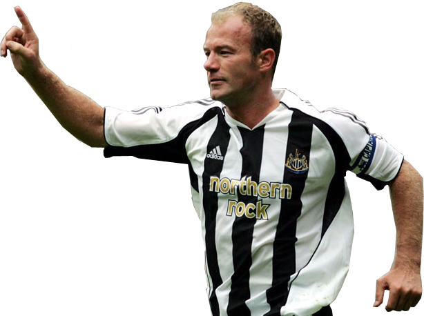

LeagueLegends
League Legends

Alan Shearer (born 13 August 1970) is a retired English footballer. He played for England
national team, and club teams like Southampton, Blackburn Rovers and Newcastle United. He won
the Premier League with Blackburn in the 1994/95 season
- Next Page
- Back